Chap 10 Graph
注：本章可与fds的[[Chap 9 Graph Algorithm|同名章节]]对比阅读
10.1 Graphs and Graph Models
定义：图(graph)\(G = (V, E)\)，其中\(V\)表示顶点(vertice/nodes) 的非空集合，\(E\)表示边(edge) 的集合。每条边联系1-2个顶点，这些顶点称为端点(endpoint)，称一条边连接它的端点
-
无限图(infinite graph)：包含无限个顶点==或==无限条边的图
-
有限图(finite graph)：包含有限个顶点==和==有限条边的图。本章只考虑有限图的问题
-
简单图(simple graph)：每条边连接不同的顶点，且不存在连接同一对顶点的两条边的图。这时，我们可以用顶点对{u, v}表示一条边，而不产生歧义

- 多重图(multigraph)：存在多条边(multiple edges) 连接同一对顶点的图。如果顶点u, v间有m条边，称{u, v}是重数为m的边

- 伪图(pseudograph)：存在环，且可能有多条边连接同一对顶点或连接顶点自身的图
环(loop)：从某个顶点出发连接自身的边

上述的图均为无向图(undirected graph)
定义：有向图(directed graph, digraph)\((V, E)\)包含顶点的非空集合\(V\)和有向边(directed edges/arc) 的集合\(E\)。每条有向边与有序顶点对(u, v)有联系，称v为起点(start)，v为终点(end)
- 有向图也存在环和多条有向边的情况
-
有向图中存在一些有向边，使得u和v之间建立了双向的连接，即如果有边u \(\rightarrow\) v，那么也存在一条或多条边v \(\rightarrow\) u
-
简单有向图(simple directed graph)：没有环，也没有多条有向边的图

- 有向多重图(directed multigraph)：对于同一有序顶点对(或同一顶点)存在多条有向边(multiple directed edges)。如果顶点u, v间有m条有向边，称(u, v)是重数(multiplicity) 为m的有向边

- 混合图(mixed graph)：既包含有向边，也包含无向边的图
总结：
注：如果题目没有明确说明，默认将图当作==无向图==
Graph Models
注：这部分内容并不重要，因此这里只简单列举一些例子，具体内容见书本
Social Networks
社交网络(social networks)：用顶点表示个体或组织，用边表示个体或组织之间的联系
- 熟人/朋友关系图(acquaintanceship and friendship graphs)：无向图，无环，没有多重边

- 影响力图(influence graphs)：有向图，无环，没有多重边

- 合作图(collaboration graphs)：无向图，无环，没有多重边
- 好莱坞图(Hollywood graph)
- 学术合作图(academic collaboration graph)
Communication Networks
- 电话图(call graphs)：有向/无向均可，有多重边

Information Networks
- 网络图(the web graph)：有向图
- 引用图(citation graphs)：有向图，无环，没有多重边
Software Design Applications
- 模块依赖图(module dependency graphs)：有向图

- 优先级图(precedence graphs)和并行处理(concurrent processing)

Transportation Networks
- 航空路程(airline routes)：有向多重图
- 路线网络(road networks)：混合图
Biological Networks
- 生态位重叠图(niche overlap graphs)：无向简单图 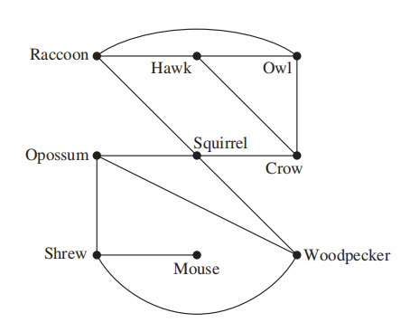
- 蛋白质相互作用图(protein interaction graphs)：无向图（下图表示RNA的蛋白质）

Semantic Networks
- 自然语言理解(natural language understanding, NLU)：机器分拆并解析人类的话语
注：NLU是自然语言处理(NLP)的子集，也是NLP中最困难的部分
- 信息检索(information retrieval, IR)：从基于各种类型的搜索的一组源中获取信息
语义关系(semantic relation)：两个或多个单词基于意思的联系

Tournaments
- 循环赛(round-robin tournament)：每个队伍都和其他队伍有一次比赛，且不允许平局

- 单淘汰赛(single-elimination tournament)：如果输一次就被淘汰

Others
- 一笔画问题(one-stroke drawing problem)：画一幅画，确保连续移动而不提笔，使得画中所有部分仅画一遍

- [[Chap 6 Counting#^c8f5b8|拉姆齐问题(Ramsey problem)]]：每两个人要么是朋友，要么是敌人，那么六个人中有三对朋友和三对敌人
- 排座问题(seating problem) 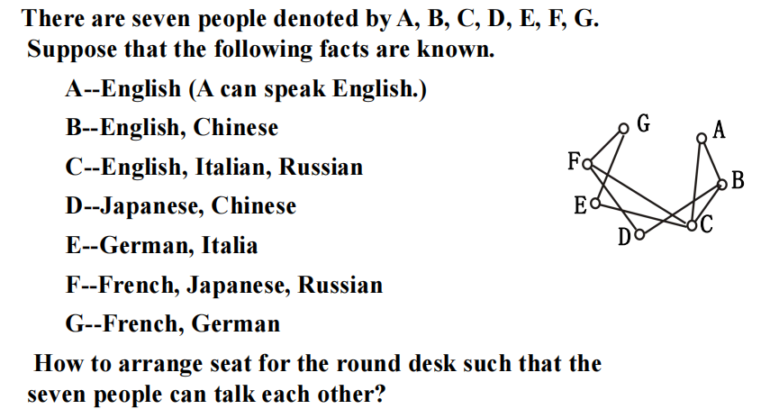
- 公共资源问题(utilities problem)：具体见wiki，这里仅举个🌰

- 钻孔问题 \(\rightarrow\) 最短路问题
问题：找到一种钻孔顺序，使得用时最少

Supplements(from Exercises)
关于一组集合\(A_1, A_2, \dots, A_n\)的交集图(intersection graph)：它的顶点表示这些元素，它的边表示某两个集合存在非空交集的关系
10.2 Graph Terminology and Special Types of Graphs
Basic Terminology
关于无向图：
定义： + 如果顶点u, v是无向图G的边e上的两个端点，称这两个顶点是相邻的(adjacent/neighbors)，这样的边e连接了u和v + 图\(G = (V, E)\)上的顶点v的所有相邻顶点构成的集合称为v的邻居(neighborhood)，记作\(N(v)\) + 如果A是V的子集，用\(N(A)\)表示所有与A中的至少一个顶点相邻的所有顶点构成的集合，所以，\(N(A) = \bigcup\limits_{v \in A}N(v)\) + 无向图中顶点v的度(degree) = 该顶点的边数(除了环 = 2个度)，记作\(deg(v)\) + 度为0的顶点是孤立的(isolated) + 度为1的顶点是下垂的(pendant)
定理1——握手定理(THE HANDSHAKING THEOREM)：令\(G = (V, E)\)是边数为m的无向图，则：所有顶点的度之和 = 边数 \(\times\) 2，即：\(2m = \sum\limits_{v \in V}deg(v)\)（该定理同样适用于重边）
🌰：
定理2：在无向图中，度为奇数的顶点个数为偶数
证明：令\(V_1, V_2\)分别表示度为偶数和度为奇数的顶点，由定理1，有： $$ 2m = \sum\limits_{v \in V}deg(v) = \sum\limits_{v \in V_1}deg(v) + \sum\limits_{v \in V_2}deg(v) $$ 显然：等式左边的数为偶数，且最右边的等式中第1项为偶数。因此第2项，即度为奇数的顶点个数一定是偶数
关于有向图：
定义： + 当(u, v)表示图G的有向边时，我们称u到v是相邻的，v来自u是相邻的。u称为(u, v)的起点(initial vertex)，v称为(u, v)的终点(terminal/end vertex)。自环的起点、终点是相同的 + v的入度(in-degree) = v作为边的终点时的边数，记作\(deg^-(v)\) + v的出度(out-degree) = v作为边的起点时的边数，记作\(deg^+(v)\)
注：v的自环使v的入度和出度均+1
定理3：令\(G = (V, E)\)为有向图，则 $$ \sum\limits_{v \in V} deg^-(v) = \sum\limits_{v \in V}deg^+(v) = |E| $$
潜在无向图(underlying undirected graph)：无视有向图中边的方向，得到一张无向图
Some Special Simple Graphs
-
完全图(complete graph) 是一个简单图，满足每一对不同的顶点之间仅有一条边，记作\(K_n\)。如果至少有一对不同的顶点没有连接起来，称这样的图是不完全的(noncomplete)

注：边数m = C(n, 2)
-
环(cycle)：一张包含n(n \(\ge\) 3)个顶点，边为\(\{v_1, v_2\}, \{v_2, v_3\}, \dots, \{v_{n-1}, v_n\}\)和\(\{v_n, v_1\}\)，记作\(C_n\) 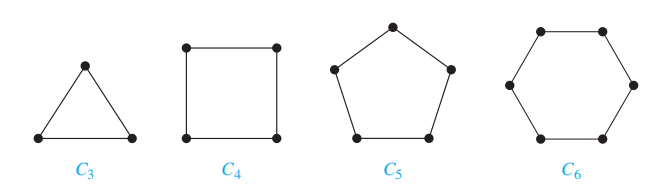
-
轮(wheel)：在环\(C_n\)的基础上多一个顶点，且该顶点与原来n个顶点间都有一条边，记作\(W_n\)

-
n维超立方体/n立方(n-dimensional hypercube/n-cube)：记作\(Q_n\)。图的顶点表示\(2^n\)个长度为n的位串。当且仅当2个顶点的位串只相差1位时，两个顶点是相邻的。
 我们可以根据n立方构造出(n+1)立方：得到两个相同的\(Q_n\)，对第1个\(Q_n\)的所有位串的最左边添0，对第2个\(Q_n\)的所有位串的最左边添1，然后将仅相差1位的两个位串(顶点)用边连接起来
，如图所示：
我们可以根据n立方构造出(n+1)立方：得到两个相同的\(Q_n\)，对第1个\(Q_n\)的所有位串的最左边添0，对第2个\(Q_n\)的所有位串的最左边添1，然后将仅相差1位的两个位串(顶点)用边连接起来
，如图所示：
 因此，我们可以得到\(Q_n\)的边数\(m_n\)的递推关系：
$$
m_n = 2m_{n-1} + 2^{n-1}
$$
解得\(m_n = n \cdot 2^{n-1}\)（利用[[Chap 8 Advanced Counting Techniques#Linear Nonhomogeneous Recurrence Relations with Constant Coefficients|线性非齐次递推关系]]的知识求解）
因此，我们可以得到\(Q_n\)的边数\(m_n\)的递推关系：
$$
m_n = 2m_{n-1} + 2^{n-1}
$$
解得\(m_n = n \cdot 2^{n-1}\)（利用[[Chap 8 Advanced Counting Techniques#Linear Nonhomogeneous Recurrence Relations with Constant Coefficients|线性非齐次递推关系]]的知识求解）
Bipartite Graphs
定义：如果一个简单图G的顶点集V能被分成两个不相交的集合\(V_1, V_2\)，使得图中的每条边连接\(V_1\)的1个顶点和\(V_2\)的1个顶点(没有边连接\(V_1\)的两个顶点或\(V_2\)的两个顶点)，称G是二分的(bipartite)，称\((V_1, V_2)\)是G的顶点集V的二分(bipartition)
🌰：
1.  2. 图G和图H是二分的吗？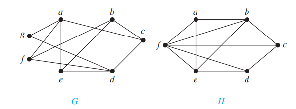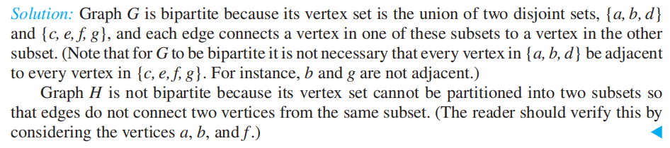
定理4：当且仅当用两种不同颜色涂顶点，可以满足相邻的顶点不同色时，该简单图是二分的
2. 图G和图H是二分的吗？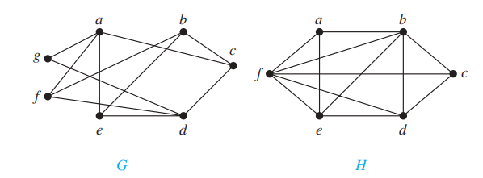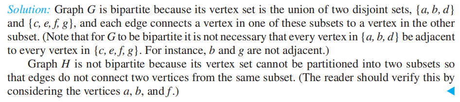
定理4：当且仅当用两种不同颜色涂顶点，可以满足相邻的顶点不同色时，该简单图是二分的
注：这里用到了图论的重要分支：
证明： 判断二分图的另一种方法：二分图的充要条件是——不可能通过遍历奇数条不同的边，实现从某个顶点又回到该顶点
判断二分图的另一种方法：二分图的充要条件是——不可能通过遍历奇数条不同的边，实现从某个顶点又回到该顶点
完全二分图(complete bipartite graph)：一张图被分成顶点数分别为m和n的两个子集，边满足连接1个位于第1个子集的顶点，和1个位于第2个子集的顶点，记作\(K_{m, n}\)

Bipartite Graphs and Matchings
🌰：二分图的应用——工作安排
注：具体内容见书本\(P_{692-693}\)(~~内容有点多，懒得写了~~)
上述问题可被视为找简单图G = (V, E)的匹配(matching) M，它是边集合E的子集，满足没有两条边有共同的顶点，即对于不同的边{s, t}和{u, v}，顶点s, t, u, v是不同的。
如果有顶点是匹配关系M上的某条边的一个端点，称该顶点在M中是匹配的(matched)；否则是不匹配的(unmatched)
最大匹配(maximum matching) 是具有最大边数的匹配
对于二分图G = (V, E)，它的二分为(\(V_1, V_2\))，如果\(V_1\)的每个顶点是匹配M某条边的端点，即\(|M| = |V_1|\)，称M是\(V_1\)到\(V_2\)的完全匹配(complete matching)
🌰： 定理5——霍尔婚配定理(HALL'S MARRIAGE THEOREM)：对于一个二分图\(G = (V, E)\)，它的二分为\((V_1, V_2)\)，当且仅当对于\(V_1\)的所有子集\(A\)，满足\(|N(A)| \ge |A|\)时，该二分图有从\(V_1\)到\(V_2\)的完全匹配
定理5——霍尔婚配定理(HALL'S MARRIAGE THEOREM)：对于一个二分图\(G = (V, E)\)，它的二分为\((V_1, V_2)\)，当且仅当对于\(V_1\)的所有子集\(A\)，满足\(|N(A)| \ge |A|\)时，该二分图有从\(V_1\)到\(V_2\)的完全匹配
证明：(有点难)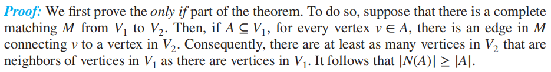
Some Applications of Special Types of Graphs
局域网(local area network)：
+ 星型拓扑(star topology)：\(K_{1, n}\)
+ 环形拓扑(ring topology)：\(C_n\)
+ 混合(hybrid)拓扑：\(W_n\)

并行计算中的互联网(interconnection networks for parallel computation)：
串行(serial) 算法：算法在一个时刻内执行一个步骤(书上给出的算法均是串行的)。然而，这种算法无法应对高强度计算的问题。
因此就有了并行处理(parallel processing)，使用包含多个自带内存的处理器的计算机，克服只有单个处理器的计算机的局限。
并行算法(parallel algorithm)：将问题分解成能够同时解决的一些子问题，使用多处理器的电脑能够快速解决问题。
在并行处理中，处理器之间需要相互连接。因此要选择合理的连接方法：
+ 每对处理器都双向连接，形成完全图\(K_n\)——最简单，但也是最贵的方法
+ 线性数组(linear array)
+ 优点：每个处理器与其他处理器间至多有两条直接连接
+ 缺点：有时需要大量的中间连接(称为跳(hop))来实现处理器间的通信
 + 网状网络(mesh network)：n个处理器被标记为\(P(i, j)\ (0 \le i \le m - 1, 0 \le j \le m - 1)\)。两个方向的连接使\(P(i, j)\)最多有4个邻居(在网状网络中的\(P(i \pm 1, j)\)和\(P(i, j \pm 1)\))。此时任意一对处理器间的通信需要\(O(\sqrt n) = O(m)\)个中间连接即可。
+ 网状网络(mesh network)：n个处理器被标记为\(P(i, j)\ (0 \le i \le m - 1, 0 \le j \le m - 1)\)。两个方向的连接使\(P(i, j)\)最多有4个邻居(在网状网络中的\(P(i \pm 1, j)\)和\(P(i, j \pm 1)\))。此时任意一对处理器间的通信需要\(O(\sqrt n) = O(m)\)个中间连接即可。
 + 超立方体(hypercube)：处理器的数量为n = \(2^m\)，处理器被标记为\(P_0, \dots, P_{n-1}\)。每个处理器与其他m个处理器有双向连接，即\(P_i\)跟与i仅相差1位的处理器之间有双向连接。这种方法权衡了处理器直接连接的数量和中间连接的数量，因此现在很多电脑和并行算法采用超立方体网络。可以用图\(Q_m\)表示
+ 超立方体(hypercube)：处理器的数量为n = \(2^m\)，处理器被标记为\(P_0, \dots, P_{n-1}\)。每个处理器与其他m个处理器有双向连接，即\(P_i\)跟与i仅相差1位的处理器之间有双向连接。这种方法权衡了处理器直接连接的数量和中间连接的数量，因此现在很多电脑和并行算法采用超立方体网络。可以用图\(Q_m\)表示

New Graphs from Old
定义： + 图G = (V, E)的子图(subgraph) H = (W, F)，满足W \(\subseteq\) V，F \(\subseteq\) E。 + 如果H是G的子图且H \(\ne\) G，则H是G的真子图(proper subgraph) + 如果满足W = V, F \(\subseteq\) E，称H是G的生成子图(spanning subgraph) + 令G = (V, E)为简单图，称子集(W, F)为顶点集V的子集W的点诱导子图(subgraph induced)（边集F包含E中的边），充要条件为F的边上的两个端点都在集合W中。
几种情况：对于G = (V, E)
+ 移除或添加一条边：
+ 移除边e \(\in\) E：\(G - e = (V, E - \{e\})\)
+ 相似地，如果我们要移除边的子集E'，则剩下的G' = (V, E - E')
+ 添加边e：\(G + e = (V, E \cup \{e\})\)
+ 边的联系(edge contraction)：移除端点为u, v的边e，然后合并u, v为新的顶点w，接着将所有原来与u和v相连的边改成连接到w上。也就是说，对于原来的图G = (V, E)，产生新图G'，它的顶点集V' = V - {u, v} \(\cup\) {w}，它的边集E'包含除了以u或v为端点的所有边，再加上连接w的边(这些边原来连接的是u或v)
+ 移除顶点：\(G - v = (V - \{v\}, E')\)，其中E'是除了与v相连的所有边
+ 移除顶点集V'：(V - V', E‘)，其中E'是除了与V'上所有顶点相连的所有边
 + 图的并集(union)：对于两张简单图\(G_1 = (V_1, E_1), G_2 = (V_2, E_2)\)，它们的并集\(G_1 \cup G_2 = (V_1 \cup V_2, E_1 \cup E_2)\)
+ 图的并集(union)：对于两张简单图\(G_1 = (V_1, E_1), G_2 = (V_2, E_2)\)，它们的并集\(G_1 \cup G_2 = (V_1 \cup V_2, E_1 \cup E_2)\)

Supplements(from Exercises)
- 假设二分图G = (V, E)，它的二分为\((V_1, V_2)\)，且\(A \subseteq V_1\)，则\(V_1\)的最大顶点数，为G的匹配的端点 = \(|V_1| - \max\limits_{A \subseteq V_1}def(A)\)，其中\(def(A) = |A| - |N(A)|\)称为A的缺陷(deficiency)
- 图的度序列(degree sequence) 是指将顶点的度按非递增顺序排列的序列
- 如果序列\(d_1, d_2, \dots, d_n\)是简单图的度序列，则称该序列是图化的(graphic)
- 当且仅当对于非负数且非递增序列\(d_1, d_2, \dots, d_n\)，将序列\(d_2 - 1, \dots, d_{d_1 + 1} - 1, d_{d_1 + 2}, \dots, d_n\)重新排列，使得这些项按非递增顺序排列后是个图序列(graphic sequence)，则原来的序列也是图序列
- 每个非负数且非递增序列，若它的和是偶数，则该序列是一个伪图(允许有环的无向图)的度序列
- 如果简单图上的每个顶点都有相同的度，称这个图是正则的(regular)。如果每个顶点的度均为n，称该图是n-regular
- \(K_n\)是(n-1)-regular
- 简单图\(G\)的补图(complementary graph)\(\overline{G}\)与\(G\)有相同的顶点。当且仅当\(G\)上的两个顶点不相邻时，\(\overline{G}\)上同样的两个顶点是相邻的
- 如果G有n个顶点，则\(K_n = G \cup \overline{G}\)
- 如果二分图G有v个顶点和e条边，则\(e \le \dfrac{v^2}{4}\)
- 有向图G = (V, E)的逆(converse) 为有向图\(G^{conv}\) = (V, F)，其中F通过逆转E的边的方向得到
- \((G^{conv})^{conv} = G\)
- 当且仅当\(G\)有对称关系时，\(G\)存在逆
10.3 Representing Graphs and Graph Isomorphism
Representing Graphs
图的表示法：
+ 列出所有的边
+ 邻接表：（前提：图中没有重边）表示出每个顶点的相邻顶点
🌰：
1. 无向图 2. 有向图
2. 有向图
 + ==邻接矩阵==
+ ==关联矩阵==
+ ==邻接矩阵==
+ ==关联矩阵==
Adjacency Matrices
当图的边数很多时，用上述的前两种方法就比较麻烦了。为了简化计算，通常用矩阵表示图
假设有==无向图==G = (V, E)，|V| = n，它的顶点按任意排序排列：\(v_1, v_2, \dots, v_n\)，则它的邻接矩阵(adjacency matrix)\(\mathbf{A}_G = [a_{ij}]\)是一个\(n \times n\)的零一矩阵，它的元素为： $$ a_{ij} = \begin{cases}1 & \text{if } {v_i, v_j} \text{ is an edge of } G \ 0 & \text{otherwise}\end{cases} $$ 注： + 对于同一张n顶点的图，共有n!种不同的邻接矩阵（因为顶点顺序任意） + 对于一张简单图，\(a_{ii} = 0, i = 1,2,3, \dots, n\) + 顶点\(v_i\)的环：\(a_{ii} = 1\) + \(v_i\)和\(v_j\)之间的重边：\(a_{ij}\) = \(\{v_i, v_j\}\)的重数 + 所有的无向图，包括多重图和伪图，其邻接矩阵都是对称的 + 第i行元素之和 = 第i列元素之和 = \(v_i\)的度
🌰：

对于==有向图==的邻接矩阵\(\mathbf{A} = [a_{ij}]\)，它的元素为： $$ a_{ij} = \begin{cases}1 & \text{if } (v_i, v_j) \text{ is an edge of } G \ 0 & \text{otherwise}\end{cases} $$ 注： + 有向图的邻接矩阵不一定是对称的 + 有向多重图也可用邻接矩阵表示：\(a_{ij}\) = \((v_i, v_j)\)的重数 + 第i行元素之和 = \(v_i\)的出度，第i列元素之和 = \(v_i\)的入度
Incidence Matrices
假设有==无向图==G = (V, E)，顶点为\(v_1, v_2, \dots, v_n\)，边为\(e_1, e_2, \dots, e_m\)，那么它的关联矩阵(incidence matrix) 为\(\mathbf{M} = [m_{ij}]\)，是一个\(m \times n\)的矩阵，它的元素为：
$$
m_{ij} = \begin{cases}1 & \text{when edge } e_j \text{ is incident with }v_i \ 0 & \text{otherwise}\end{cases}
$$
注：
+ 第i行元素之和 = \(v_i\)的度，
+ 第i列元素之和 = \(\begin{cases}1 & \text{loop} \\ 2 & \text{normal}\end{cases}\)
+ 关联矩阵可以表示重边和环，见下面的🌰：

Isomorphism of Graphs
定义：对于两张简单图\(G_1 = (V_1, E_1), G_2 = (V_2, E_2)\)，如果存在一个双射函数\(f: V_1 \rightarrow V_2\)，满足：\(\forall a, b \in V_1\)，若\(a, b\)相邻，则\(f(a), f(b) \in V_2\)且\(f(a), f(b)\)相邻，则称这两张图是同构的(isomorphic)，这样的函数\(f\)称为同构(isomorphism)。如果两张简单图不同构，称它们是非同构的(nonisomorphic)
注：两张简单图的同构是一种等价关系(equivalent relation)
Determining whether Two Simple Graphs are Isomorphic
对于两张n顶点的简单图，有n!种可能的双射关系，因此当n很大时，直接根据顶点的相邻关系来判断同构是不切实际的；但是，判断两张图不是同构的相对比较容易，我们可以通过比较它们的不变量(invariant) 来求解。
有哪些不变量： + 顶点数 + 边数 + 所有顶点的总度数
然而，我们只能用不变量判断两张图的非同构关系，目前没有已知用来判断两张图是同构的
另一种判断同构的方法：比较两张图的邻接矩阵
🌰：证明下面两张图是同构的
1.

 2.
2.

 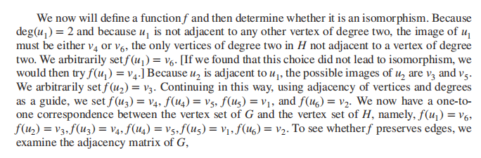
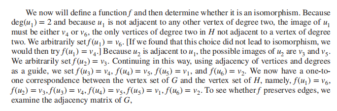


求解同构的算法： + 目前，已知的最佳算法在最坏情况的时间复杂度为指数级 + 2017年，有人找到一个算法：对于n顶点的图，计算它的同构的次数为\(2^{f(n)}\)，\(f(n)\)为\(O((\log n)^3)\)，因此算法的时间复杂度为准多项式时间(quasi-polynomial time) + 同构测试软件：NAUTY
应用： + 化学 + 电路设计(the design of electronic circuits) + 生物信息学(bioinformatics) + 计算机视觉(computer vision)
Supplements(from Exercises)
- n顶点的无向图\(G_n\) = (V, E)的密度(density)：\(\dfrac{2|E|}{|V|(|V| - 1)}\)
- 稀疏(sparse)图：\(\lim\limits_{n \rightarrow \infty} \dfrac{2|E|}{|V|(|V| - 1)} = 0\)
- 稠密(dense)图：\(\lim\limits_{n \rightarrow \infty} \dfrac{2|E|}{|V|(|V| - 1)} = c(c \in \mathbf{R}^+)\)
- 假设G和H是同构的，则\(\overline{G}\)和\(\overline{H}\)是同构的
- 有2个或多个顶点的二分图，对它的顶点进行一定排序后，能够形成如下形式的邻接矩阵 $$ \begin{bmatrix} \mathbf{0} & \mathbf{A} \ \mathbf{B} & \mathbf{0} \end{bmatrix} $$
- 如果简单图G和它的补图\(\overline{G}\)是同构的，称G是自补的(self-complementary)
- 如果G是v顶点的自补简单图，则v \(\equiv\) 0 or 1(mod 4)
- 魔鬼对(devil's pair)：在一个故意的同构测试中，存在一对非同构图，无法检测出这两张图不是同构的
10.4 Connectivity
Paths
定义(==无向图==)： + 令n为非负整数，G为无向图，G中从u到v，长度为n的路径(path)，是G上的n条边的序列\(e_1, \dots, e_n\)(存在顶点序列\(x_0 = u, x_1, \dots, x_{n-1}, x_n = v\)，使得\(e_i\)的端点为\(x_{i-1}\)和\(x_i\)，\(i = 1, \dots, n\))。 + 在简单图中，路径可以被表示为顶点的序列\(x_0, x_1, \dots, x_n\)（因为列出的顶点能够表示唯一的路径） + 如果路径的起点和终点相同，即u = v，且长度大于0，则称该路径为环(circuit) + 路径或环经过(pass through) 顶点\(x_1, x_2, \dots, x_{n-1}\)，遍历(traverse) 边\(e_1, e_2, \dots, e_n\) + 无重复边出现的路径或环认为是简单的(simple)
注： + 如果不区分重边，则路径可以记作\(e_1, e_2, \dots, e_n\)，其中\(e_i = \{x_{i-1}, x_i\}, i = 1, 2, \dots, n\) + 长度为0的路径就是单个点 + 在别的书中： + 路径被称为walk，它是交错的顶点和边的序列：\(v_0, e_1, v_1, e_2, \dots, v_{n-1}, e_n, v_n\)，其中\(v_{i-1}, v_i\)是\(e_i\)的端点(\(i = 1, 2, \dots, n\))。 + 环被称为closed walk + 简单路径被称为trail + 无重复顶点出现的trail被称为path（与上面的定义冲突） 因此，我们需要根据语境判断这些词语的意思
定义(==有向图==)： + 令n为非负整数，G为有向图，G中从u到v，长度为n的路径(path)，是G上的n条边的序列\(e_1, \dots, e_n\)，使得\(e_i = (x_{i-1}, x_i)\)，\(i = 1, \dots, n\)，其中\(x_0 = u, x_n = v\)。 + 当有向图中没有重边时，路径可以用顶点序列\(x_0, x_1, x_2, \dots, x_n\)表示 + 环(circuit/cycle)：长度为1，起点 = 终点的路径 + 无重复边出现的路径或环认为是简单的(simple)
注： + 上面的“注”中提到的别称(walk, closed walk...)也适用于有向图 + 如果不考虑重边，则可以使用边的序列表示路径
🌰：
1. 熟人图(acquaintanceship graph)的路径：现在很多社会学家猜想：世界上任意两个人之间的路径很短，仅经过5个甚至更少的人——六度分隔理论(six degree of seperation)
2. 合作图(collaboration graph)的路径
+ Erdos number：m与数学家Paul Erdos之间最短路径的长度
+ Bacon number: c与演员Kevin Bacon之间最短路径的长度

Connectedness in Undirected Graphs
定义：在一张无向图中，如果每对不同的顶点之间都存在一条路径，称这个无向图是连通的(connected)；不连通的无向图称为断开的(disconnected)。如果我们移除图的顶点或边，产生了断开的子图，那么我们断开(disconnect) 了这张图
定理1：在连通的无向图中，任意一对不同顶点之间总存在一条简单路径
连通分量(connected component)：图G的最大连通子图。一张不连通的图包含两个或多个不相交的连通分量，它们的并集构成了整张图

How Connected in a Graph?
- 割点(cut vertices/articulation points) 满足：若移除该顶点以及与它关联的边，就会生成1个包含更多连通分量的子图(因为移除了1个顶点和一些边，相较于原图，剩余的图是它的子图)
- 割边(cut edges/bridges) 满足：若移除该边，就会生成1个包含更多连通分量的子图
Vertex Connectivity
并不是所有图都有割点。比如完全图\(K_n(n \ge 3)\)，任意移除1个顶点及其关联边，剩下的图为\(K_{n-1}\)，它还是连通图。
- 不可分割图(nonseparable graph)：没有割点的连通图
- 点割集(vertex cut/seperating set)：对于图G = (V, E)的顶点集V的子集V'，满足G - V'是断开的。除了完全图外的所有连通图，都有1个点割集
- 点连通度(vertex connectivity)：无向图G中，点割集内顶点的最少数量，记作\(\kappa(G)\)
- 由于完全图没有点割集，因此按上述定义，无法定义\(\kappa(K_n)\)。因此，我们记\(\kappa(G) = n - 1\)，表示生成仅包含单个顶点的图所需移除顶点的数量
- \(0 \le \kappa(G) \le n - 1\)
- 当且仅当G是断开的，或G = \(K_1\)时，\(\kappa(G) = 0\)
- 当且仅当G是完全图时，\(\kappa(G) = n - 1\)
- 如果\(\kappa(G) \ge k\)，称图为k点连通(k-connected/k-vertex-connected)
- 单点连通(1-connected)：图是连通的且顶点数 > 1
- 双点连通(2-connected/biconnected)：图是不可分割的且顶点数 > 2
- 如果G是k点连通的，则G也是j点连通的(\(0 \le j \le k\))
🌰：
 1. 找出\(G_1\)的割点和割边
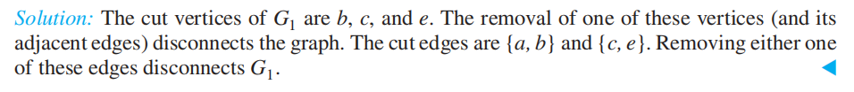
2. 找出所有图的点连通度
1. 找出\(G_1\)的割点和割边
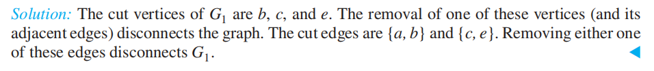
2. 找出所有图的点连通度

Edge Connectivity
- 如果图有割边，我们只需去除割边就能断开该图
-
如果没有，我们需要寻找所需去除的最小的边的集合，使得该图是断开的
-
边割集(edge cut)：边集E'，满足G - E'是断开的。除了完全图外的所有连通图，都有1个点割集
- 边连通度(edge connectivity)：无向图G中，边割集内最小的边数，记作\(\lambda(G)\)
- \(0 \le \lambda(G) \le n - 1\)
- \(\lambda(G) = 0\)：G不连通或仅包含1个顶点
- \(\lambda(G) = n - 1\)：当且仅当\(G = K_n\)
- \(\lambda(G) \le n - 2\)：当G不是完全图时
🌰：找出上面5张图的边连通度

关于点连通度和边连通度的不等式：对于G = (V, E)，|V| > 2时， $$ \kappa(G) \le \lambda(G) \le \min\limits_{v \in V} deg(v) $$ 应用： + 计算机网络的可靠性分析： + 点连通度：能够断开网络的路由器的最小数量 + 边连通度：能够断开网络的光纤连接的最小数量 + 高速公路网： + 点连通度：能够阻碍任意两点通行的关闭的交汇点的最小数量 + 边连通度：能够阻碍任意两点通行的关闭的公路的最小数量
Connectedness in Directed Graphs
定义：在有向图中 + 如果对于图中任意两点a, b都存在一条\(a \rightarrow b\)和\(b \rightarrow a\)的路径，那么称该图是强连通的(strongly connected) + 如果对于图中任意两点a, b，在该图的潜在无向图(underlying undirected graph) 中存在一条路径，那么称该图是弱连通的(weakly connected)
注：显然强连通的图也满足弱连通 + 强连通分量(strongly connected component/strong component)：最大强连通子图。 + 若a, b是无向图中的2个顶点，则它们所在的强连通分量要么是相同的，要么是不相交的
应用：网络图的强连通分量
巨强连通分量(giant strongly connected component, GSCC)：原来有向图中与它的潜在无向图中的连通分量对应的子图，有一个非常大的强连通分量以及很多很小的分量，前者称为GSCC
具体内容见教材\(P_{722}\)
Paths and Isomorphism
其他的不变量： + 长度为k的简单环(k \(\ge\) 2)，用来判断2张图是非同构的 + 用路径构建潜在同构(函数)的映射
🌰：
1. 
 2.
2.  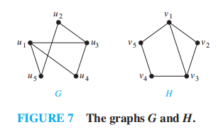
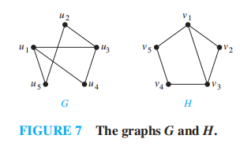
Counting Paths between Vertices
定理2：令图G有邻接矩阵\(\mathbf{A}\)，其顶点顺序为\(v_1, v_2, \dots, v_n\)（有向边、无向边、多重边、环均允许），则从\(v_i\)到\(v_j\)长度为r的不同路径数 = \(\mathbf{A}^r\)中(i, j)项
证明：


[!note] 补充：可达性矩阵\(\mathbf{P} = [p_{ij}]_{n \times n}\) $$ p_{ij} = \begin{cases}1 & \text{if there is a path between }i \text{ and } j \ 0 & \text{otherwise}\end{cases} $$ \(\therefore\ \mathbf{P} = \mathbf{A} \vee \mathbf{A}^2 \vee \dots \vee \mathbf{A}^n\)
意义：对于有向图，当\(\mathbf{P}\)中所有元素均为1时，该图是强连通的；也可以用来寻找强连通分量
定理2的应用： + 找到两个顶点间最短路径的长度 + 判断图是否连通
🌰：

Supplements(from Exercises)
- 假设G = (V, E)是有向图，对于v, w \(\in\) V，如果存在从v到w的有向路径，称从v出发，w是可到达的(reachable)。如果同时存在从v到w和从w到v的路径，称v和w是相互可到达的(mutually reachable)
- 如果u和v是相互可到达的，v和w是相互可到达的，则u和w是相互可到达的
- 每个n顶点连通图至少有n-1条边
- 对于每个简单图，存在从任意度为奇数的顶点出发，到其他度为奇数的顶点的路径
- 假设v是割边的端点，当且仅当该点的度>1时，v是一个割点
- 当且仅当存在顶点u, v(不同于顶点c)，使得所有从u到v的路径都需经过c时，c为简单图G的割点
- 至少有2个顶点的简单图，至少有2个顶点不是割点
- 当且仅当某条边不是简单图中任何简单环的一部分时，该边为割边
- 有向图G的点基(vertex basis) 是G中顶点的最小集合B，使得G中任意不属于B的顶点v，存在一条从B的某些顶点出发，到v的路径
- 如果一个简单图有k个连通分量，且这些分量分别有\(n_1, n_2, \dots, n_k\)个顶点，那么G的边数不会超过\(\sum\limits_{i=1}^kC(n_i, 2)\)
- 有n个顶点，且有k个连通分量的简单图，至多有\(\dfrac{(n - k)(n - k + 1)}{2}\)条边
- 如果n顶点的简单图G有超过\(\dfrac{(n - 1)(n - 2)}{2}\)条边，则该图是连通的
- 令\(P_1, P_2\)为简单图G中两个顶点u, v之间的两条简单路径，且这两条路径不包含相同的边，则G中存在一个简单环
10.5 Euler and Hamilton Paths
注：这一节对应fds的[[Chap 9 Graph Algorithm#Euler Circuits|这部分]]
Euler Paths and Circuits
[!info] History：七桥问题

定义：
+ 欧拉环(Euler circuit)：图G中包含所有边的简单环
+ 欧拉路(Euler path)：图G中包含所有边的简单路径
+ 欧拉图(Euler graph)：具有欧拉环的图

定理1：对于一个至少有2个顶点的连通多重图，当且仅当其所有顶点的度均为偶数时，该图具有欧拉环
证明： (必要性) 欧拉环 \(\rightarrow\) 顶点的度均为偶数 + 我们假定欧拉环以a为起点，第一条边为a贡献1个度 + 欧拉环每过一个顶点，就会为该顶点贡献2个度 + 欧拉环终止于起始顶点(即a)，又为a贡献1个度(加上第一条边的1个度，就保证a具有偶数个度了) + 结合欧拉环的定义，易知所有顶点的度均为偶数
(充分性) 顶点的度均为偶数 \(\rightarrow\) 欧拉环
我们将构建一个从G中任意顶点a出发的一个简单环：
+ 简单环经过\(x_0 = a, x_1, x_2, \dots, x_n = a\)
+ 在G的子图H中构建简单路径：令w为刚刚构建的环和H的公共顶点，起始于w，构建H的简单路径。由于该路径一定终止于w，因此我们得到的其实是H的一个环
+ 通过拼接H的环和原来G的环，构建一个在G中的完整的环
+ 重复这个步骤，直至所有边都用过了(根据欧拉环的定义，此时我们得到了一个欧拉环)

注：充分性的部分还是讲的不太清楚，因为我目前没有完全理解😅
欧拉环算法的伪代码：

定理2：一个连通多重图具有欧拉路（但不是欧拉环）的充要条件是：有且仅有2个顶点的度为奇数
🌰：

[!note] 补充：有向图中的欧拉环和欧拉路 + 一个没有孤立顶点(度为0)的有向多重图，具有欧拉环的充要条件是： + 图是弱连通的 + 每个顶点的入度 = 出度 + 一个没有孤立顶点的有向多重图，具有欧拉路(但不是欧拉环)的充要条件是： + 图是弱连通的 + 每个顶点的入度 = 出度，除了2个顶点：一个顶点满足入度 - 出度 = 1，另一个顶点满足出度 - 入度 = 1
🌰：

应用： 1. 一类谜题——“一笔画”问题 2. 中国邮递员问题 3. 其他领域：计算机网络(组播)、分子生物学……
Hamilton Paths and Circuits
[!info] History: Icosian puzzle

定义： + 哈密顿路(Euler path)：图G中包含所有顶点的简单路径 + 哈密顿环(Euler circuit)：图G中包含所有顶点的简单环
注：对于图G = (V, E)，如果\(V = \{x_0, x_1, \dots, x_{n-1}, x_n\}\)，且对于\(0 \le i < j \le n\)，\(x_i \ne x_j\)，那么： + 哈密顿路为简单路\(x_0, x_1, \dots, x_{n-1}, x_n\) + 哈密顿环：\(x_0, x_1, \dots, x_{n-1}, x_n, x_0(n > 0)\) + 哈密顿图(Euler graph)：具有哈密顿环的图
一些事实： + 目前，没有已知的哈密顿环存在性的充要条件，但是有许多关于哈密顿环存在性的充分条件的定理，以及证明哈密顿环不存在的性质 + 如果图的一个顶点的度为1，那么该图不存在哈密顿环 + 如果一个顶点的度为2，那么这对应的两条边一定同时存在于任何哈密顿环中 + 如果哈密顿环经过一个顶点，除了构成哈密顿环的2条边外，与该顶点关联的其他边均可不作考虑 + 哈密顿环内不包含更小的环 + 当\(n \ge 3\)时，\(K_n\)有一个哈密顿环 + 图的边越多，具有哈密顿环的可能性越大 + 向有哈密顿环的图添加边后，会产生一个具有相同哈密顿环的图
定理3——狄拉克定理(DIRAC'S THEOREM)：如果G是一个具有n(n \(\ge\) 3)个顶点的简单图，使得每个顶点的度至少为\(\dfrac{n}{2}\)，那么G就有一个哈密顿环
定理4——奥尔定理(ORE'S THEOREM)：如果G是一个具有n(n \(\ge\) 3)个顶点的简单图，使得对于每一对不相邻的顶点对u, v满足deg(u) + deg(v) \(\ge\) n，那么G就有一个哈密顿环
注：上述2个定理提供了哈密顿环存在性的充分条件
目前，已知寻找哈密顿环的最佳算法的最坏时间复杂度为指数级(关于顶点数)，且该问题是一个NP完全问题
Applications of Hamilton Circuits
应用： + 旅行商问题(traveling salesperson problem, TSP)，见[[Chap 10 Graph#The Traveling Saleperson Problem|下一节]] + 格雷码(gray codes)
注：具体内容见dld[[Chap 1 Digital Systems and Information#Gray Codes|相关部分]]，这里只讲图论中的应用
寻找格雷码的问题 \(\rightarrow\) 找到n立方\(Q_n\)的哈密顿环 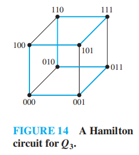
Supplements(from Exercises)
- 彼得森图(Petersen graph)：如图所示。它自身没有哈密顿环，但如果删掉一个顶点及其关联的所有边后，剩余的子图有哈密顿环 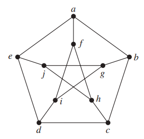
- 弗罗莱算法(Fleury's algorithm)：构建欧拉环的一种算法。(wiki)
- 首先在连通多重图中选择任意顶点
- 然后通过连续挑选边来构建环。一旦有一条边被选择，就将其从原来的图中删去。连续挑选边是为了确保每条边开始于上一条边的结束位置，这样保证这条边不是割边，除非没有可替代的边
- 骑士巡逻(knight's tour) 问题
注：由于我不懂国际象棋的规则，这里就略过了(wiki)
10.6 Shortest-Path Problems
注：这一节对应fds的[[Chap 9 Graph Algorithm#Shortest Path Algorithms|这部分]]
- 权重图(weighted graph)：每条边被赋予一个数字的图
- 权重图的路径长度(length)：路径上所有边的权重和
注：无权图的路径长度为路径上边的条数
权重图的应用：

A Shortest-Path Algorithm
这里，我们介绍的最短路算法是Dijkstra算法，它是一种贪心算法(greedy algorithm)，能够找到以某个顶点a为起始点，到其他所有顶点的最短路径。
简单介绍一下流程(更详细的介绍见[[Chap 9 Graph Algorithm#Dijkstra's Algorithm(for weighted shortest paths)|这里]])： + 初始状态：\(L_0(a) = 0, L_0(v) = \infty, S_0 = \emptyset\)，
注：这里的a表示起始顶点，L表示当前计算的从a出发的最短路径，其下标表示当前迭代次数，\(S_k\)表示经过k次迭代后，已经标注过的顶点集合 + 核心部分：\(L_k(a, v) = \min\{L_{k-1}(a, v), L_{k-1}(a, u) + w(u, v)\}\)，其中w(u, v)表示u, v间的边长
伪代码：

🌰：


注：教材给出了Dijkstra算法的归纳证明(\(P_{748}\))
定理1：Dijkstra算法能够在连通的简单无向权重图中找到两点间的最短路径
定理2：Dijkstra算法的运算(加法和比较)次数为\(O(n^2)\)
The Traveling Saleperson Problem
题目：一个旅行商想要访问所有n个城市，且对每个城市仅访问1遍，最后返回起点。问：何种访问顺序使得访问总距离最短？
🌰：
 枚举出所有路径：
枚举出所有路径：
 观察得，最短路径 = 458
观察得，最短路径 = 458
我们将原问题抽象为：在带权重的、完全的无向图中找到最小总权重的环，使得每个顶点仅被访问1次，且返回至起点，即：在完全图中找到最小总权重的哈密顿环
解决方法： + 检测所有的哈密顿环：一共有\(\dfrac{(n-1)!}{2}\)个环——不切实际
注：目前没有多项式级的最坏时间复杂度的算法来求解这个问题——它是个NP完全问题
- 近似算法(approximation algorithm)：它并不找出精准解，而是找到尽可能接近精准解的解。比如我们通过近似算法找到某个总权重为\(W'\)的哈密顿环，使得\(W \le W' \le cW\)。目前有多项式级的最坏时间复杂度的近似算法，使得\(c = \dfrac{3}{2}\)
Supplements(from Exercises)
- 弗洛伊德算法(Floyd's algorithm)：在带权连通简单图中寻找所有顶点对的最短长度，但不能用它来构建最短路径。伪代码如下：

- Dijkstra算法无法在有负权边的图中正常运行
- 最长路问题(longest path problem)：在没有简单环的带权有向图中，要求找到一条路径，使得它的边权和最大